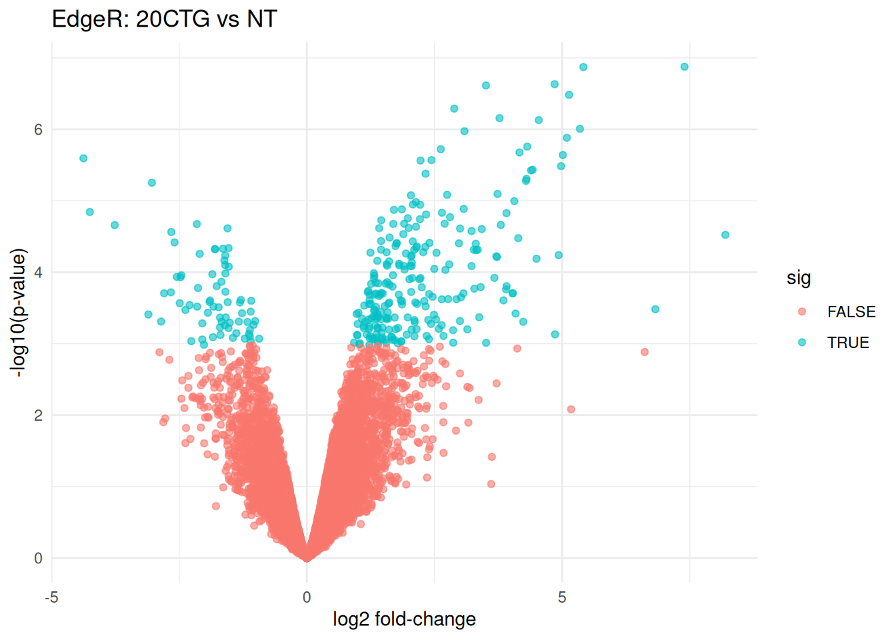
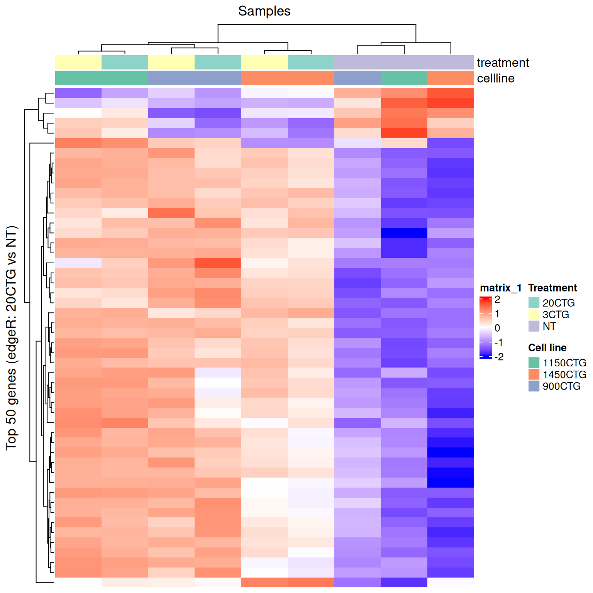
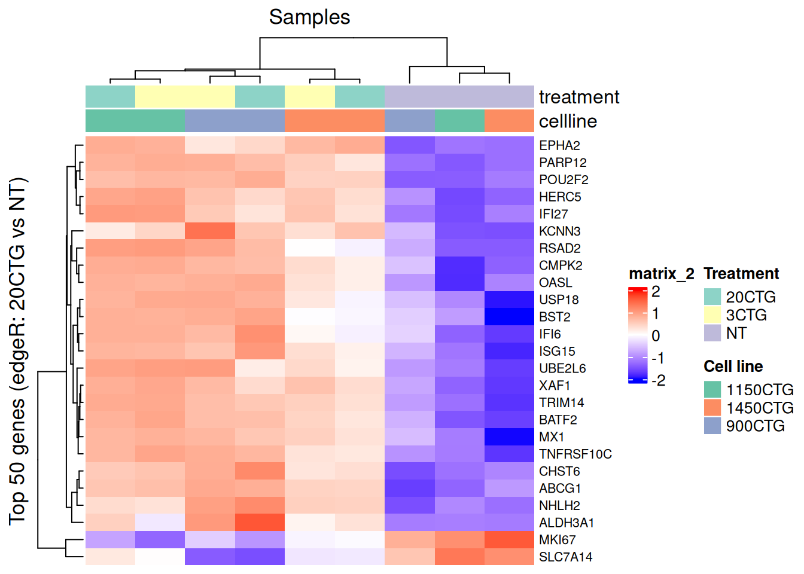

Chapter 5 Differential expression with edgeR (QLF)
In this chapter we run edgeR using the recommended quasi-likelihood pipeline:
- Start from raw counts in a
DGEList - Estimate dispersions
- Fit a QL GLM
- Perform QL F-tests for contrasts of interest
We use the same additive design:
\[ \text{counts} \sim \text{cellline} + \text{treatment} \]
obj <- readRDS("data/d1_qc_objects.rds")
dge_f <- obj$dge_f
meta <- obj$meta
mappings <- obj$mappings
design <- obj$design
# Contrasts
contr <- makeContrasts(
`3CTG_vs_NT` = treatment3CTG - treatmentNT,
`20CTG_vs_NT` = treatment20CTG - treatmentNT,
`20CTG_vs_3CTG` = treatment20CTG - treatment3CTG,
levels = design
)
# Estimate dispersion and fit QL model
edge <- edgeR::estimateDisp(dge_f, design)
fit <- edgeR::glmQLFit(edge, design)
5.2 Test: 3CTG vs NT and 20CTG vs NT
With this design, the coefficients treatment3CTG and treatment20CTG correspond to contrasts vs NT.
qlf_3_vs_nt <- edgeR::glmQLFTest(fit, contrast = contr[, "3CTG_vs_NT"])
qlf_20_vs_nt <- edgeR::glmQLFTest(fit, contrast = contr[, "20CTG_vs_NT"])
edgeR::topTags(qlf_20_vs_nt)## Coefficient: 1*treatment20CTG -1*treatmentNT
## logFC logCPM F PValue FDR
## ENSG00000134321 7.394417 4.870993 154.68256 1.329498e-07 0.0008950585
## ENSG00000028277 5.415078 2.672833 115.06349 1.342554e-07 0.0008950585
## ENSG00000130303 4.851522 4.759055 126.22056 2.336858e-07 0.0008950585
## ENSG00000142627 3.506374 3.654145 136.69159 2.434871e-07 0.0008950585
## ENSG00000138646 5.134338 3.601337 118.40507 3.291525e-07 0.0009679716
## ENSG00000106785 2.887412 5.773032 116.76336 5.126668e-07 0.0012563753
## ENSG00000173535 3.773864 2.895942 107.75445 6.975318e-07 0.0013657287
## ENSG00000187608 4.541247 8.814995 108.12725 7.430515e-07 0.0013657287
## ENSG00000135114 5.347384 2.941023 80.44935 9.846400e-07 0.0015619173
## ENSG00000184979 3.086410 4.887186 100.50212 1.062240e-06 0.00156191735.3 Test: 20CTG vs 3CTG
qlf_20_vs_3 <- edgeR::glmQLFTest(fit, contrast = contr[, "20CTG_vs_3CTG"])
edgeR::topTags(qlf_20_vs_3)## Coefficient: 1*treatment20CTG -1*treatment3CTG
## logFC logCPM F PValue FDR
## ENSG00000223883 -3.221550 -0.29165168 23.13003 0.0007347709 0.9209883
## ENSG00000280800 3.972084 3.13680001 14.61103 0.0021195502 0.9209883
## ENSG00000187672 -1.503998 1.40149268 15.71926 0.0024475763 0.9209883
## ENSG00000115266 1.654827 0.81019376 15.52729 0.0024905149 0.9209883
## ENSG00000147586 1.290415 1.60657763 15.29760 0.0026685337 0.9209883
## ENSG00000241781 3.766968 0.09488949 13.92006 0.0029691485 0.9209883
## ENSG00000102003 1.980855 0.22390723 14.43907 0.0030659698 0.9209883
## ENSG00000105357 1.886779 1.69377897 13.10103 0.0032984753 0.9209883
## ENSG00000184524 1.631481 1.49875360 13.57196 0.0036287558 0.9209883
## ENSG00000260630 0.986704 3.53676750 13.59760 0.0038688768 0.92098835.4 Extract full results
tab_3_vs_nt <- edgeR::topTags(qlf_3_vs_nt, n = Inf)$table %>% rownames_to_column("ensembl")
tab_20_vs_nt <- edgeR::topTags(qlf_20_vs_nt, n = Inf)$table %>% rownames_to_column("ensembl")
tab_20_vs_3 <- edgeR::topTags(qlf_20_vs_3, n = Inf)$table %>% rownames_to_column("ensembl")
head(tab_20_vs_nt)## ensembl logFC logCPM F PValue FDR
## 1 ENSG00000134321 7.394417 4.870993 154.6826 1.329498e-07 0.0008950585
## 2 ENSG00000028277 5.415078 2.672833 115.0635 1.342554e-07 0.0008950585
## 3 ENSG00000130303 4.851522 4.759055 126.2206 2.336858e-07 0.0008950585
## 4 ENSG00000142627 3.506374 3.654145 136.6916 2.434871e-07 0.0008950585
## 5 ENSG00000138646 5.134338 3.601337 118.4051 3.291525e-07 0.0009679716
## 6 ENSG00000106785 2.887412 5.773032 116.7634 5.126668e-07 0.00125637535.5 Volcano plot of EdgeR results
volcano_df <- tab_20_vs_nt %>%
mutate(sig = FDR < 0.05)
ggplot(volcano_df, aes(x = logFC, y = -log10(PValue), color = sig)) +
geom_point(alpha = 0.6) +
theme_minimal() +
labs(
title = "EdgeR: 20CTG vs NT",
x = "log2 fold-change",
y = "-log10(p-value)"
)
tab <- topTags(qlf_20_vs_nt, n = Inf)$table %>%
rownames_to_column("gene") %>%
mutate(
neglog10P = -log10(PValue),
direction = case_when(
FDR < 0.05 & logFC > 0 ~ "Up",
FDR < 0.05 & logFC < 0 ~ "Down",
TRUE ~ "Not sig"
)
)
ggplot(tab, aes(x = logFC, y = neglog10P)) +
geom_point(aes(color = direction), alpha = 0.7, size = 1.2) +
scale_color_manual(values = c(
"Up" = "red",
"Down" = "blue",
"Not sig" = "grey70"
)) +
geom_vline(xintercept = c(-1, 1), linetype = "dashed", color = "steelblue") +
geom_hline(yintercept = -log10(0.05), linetype = "dashed", color = "steelblue") +
theme_minimal() +
labs(
title = "edgeR volcano: 20CTG vs NT",
x = "log2 fold change (logFC)",
y = "-log10(p-value)",
color = NULL
)
5.6 Visualize the top hits as a heatmap
first map the ensembl ids to gene ids
# Keep only the columns we need and ensure they are character
map_df <- mappings %>%
transmute(
ensembl = as.character(ensembl_gene_id),
hgnc_symbol = as.character(hgnc_symbol)
) %>%
distinct(ensembl, .keep_all = TRUE)
# Join mapping onto the edgeR results table (tab_20_vs_nt)
tab_20_vs_nt_annot <- tab_20_vs_nt %>%
mutate(ensembl = as.character(ensembl)) %>%
left_join(map_df, by = "ensembl") %>%
mutate(
# Use HGNC when available, otherwise fall back to Ensembl
display_name = ifelse(!is.na(hgnc_symbol) & hgnc_symbol != "",
hgnc_symbol,
ensembl)
)
# Quick check: how many mapped?
mean(!is.na(tab_20_vs_nt_annot$hgnc_symbol))## [1] 0.9876904## ensembl hgnc_symbol display_name logFC FDR
## 1 ENSG00000134321 RSAD2 RSAD2 7.394417 0.0008950585
## 2 ENSG00000028277 POU2F2 POU2F2 5.415078 0.0008950585
## 3 ENSG00000130303 BST2 BST2 4.851522 0.0008950585
## 4 ENSG00000142627 EPHA2 EPHA2 3.506374 0.0008950585
## 5 ENSG00000138646 HERC5 HERC5 5.134338 0.0009679716
## 6 ENSG00000106785 TRIM14 TRIM14 2.887412 0.00125637535.7 Select top hits from tab_20_vs_nt_annot
Pick either top N by FDR (good default for teaching) or all genes with FDR < 0.05.
5.7.1 top N genes by FDR
top_n <- 50 # change to 25/100 as desired
top_hits_tbl <- tab_20_vs_nt_annot %>%
arrange(FDR, PValue) %>%
slice_head(n = top_n)
# Ensembl IDs for subsetting the matrix
top_hits_ensembl <- top_hits_tbl$ensembl
# Row labels we want to show on the heatmap
top_hits_labels <- top_hits_tbl$display_name
head(top_hits_tbl[, c("ensembl","display_name","logFC","FDR")])## ensembl display_name logFC FDR
## 1 ENSG00000134321 RSAD2 7.394417 0.0008950585
## 2 ENSG00000028277 POU2F2 5.415078 0.0008950585
## 3 ENSG00000130303 BST2 4.851522 0.0008950585
## 4 ENSG00000142627 EPHA2 3.506374 0.0008950585
## 5 ENSG00000138646 HERC5 5.134338 0.0009679716
## 6 ENSG00000106785 TRIM14 2.887412 0.00125637535.8 Make the expression matrix for the heatmap (logCPM + row z-score)
We’ll compute logCPM from counts (recommended for visualization), then z-score per gene.
# logCPM from counts for visualization
# logCPM for visualization
logcpm <- edgeR::cpm(counts, log = TRUE, prior.count = 1)
# Keep only genes present in the expression matrix
keep <- top_hits_ensembl %in% rownames(logcpm)
hm_mat <- logcpm[top_hits_ensembl[keep], , drop = FALSE]
# Create labels aligned to hm_mat rows
hm_labels <- top_hits_labels[keep]
# IMPORTANT: avoid duplicate rownames (HGNC symbols can repeat)
# Make labels unique while preserving readability
rownames(hm_mat) <- make.unique(hm_labels)
# Z-score per gene across samples for pattern visibility
hm_z <- t(scale(t(hm_mat)))
dim(hm_z)## [1] 50 95.9 Sample annotation (treatment + cellline) using Set3
meta$cellline <- as.factor(meta$cellline)
meta$treatment <- as.factor(meta$treatment)
# Set3 palettes (qualitative)
treat_levels <- levels(meta$treatment)
cell_levels <- levels(meta$cellline)
treat_cols <- setNames(
brewer.pal(max(3, length(treat_levels)), "Set3")[seq_along(treat_levels)],
treat_levels
)
cell_cols <- setNames(
brewer.pal(max(3, length(cell_levels)), "Set2")[seq_along(cell_levels)],
cell_levels
)
ha <- HeatmapAnnotation(
treatment = meta$treatment,
cellline = meta$cellline,
col = list(
treatment = treat_cols,
cellline = cell_cols
),
annotation_legend_param = list(
treatment = list(title = "Treatment"),
cellline = list(title = "Cell line")
)
)5.10 5) Draw the ComplexHeatmap heatmap
This produces the actual figure. Since we z-scored the rows, use a diverging palette centered at 0.
col_fun <- circlize::colorRamp2(c(-2, 0, 2), c("blue", "white", "red"))
Heatmap(
hm_z,
col = col_fun,
top_annotation = ha,
show_row_names = FALSE,
show_column_names = FALSE,
cluster_rows = TRUE,
cluster_columns = TRUE,
row_title = paste0("Top ", nrow(hm_z), " genes (edgeR: 20CTG vs NT)"),
column_title = "Samples"
)
Add labels of the gene names - only include 25 of the top hit for easier visibility.
Is this the correct way to add the top 25?
Heatmap(
hm_z[1:25,],
col = col_fun,
top_annotation = ha,
show_row_names = TRUE, # <-- now shows HGNC symbols
row_names_gp = grid::gpar(fontsize = 8),
show_column_names = FALSE,
cluster_rows = TRUE,
cluster_columns = TRUE,
row_title = paste0("Top ", nrow(hm_z), " genes (edgeR: 20CTG vs NT)"),
column_title = "Samples"
)